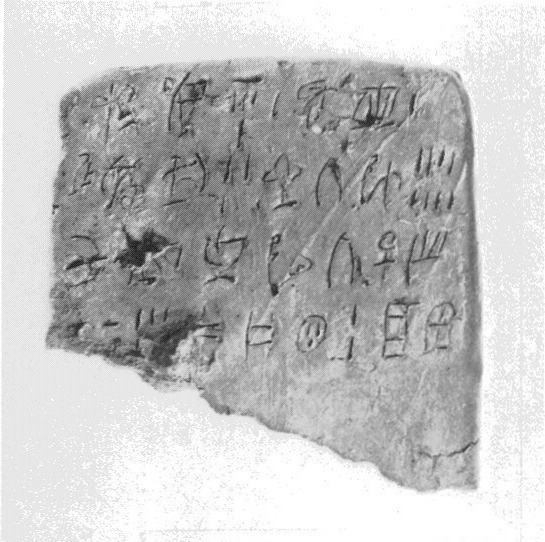
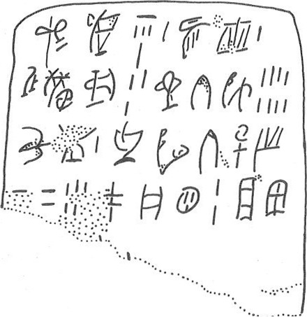

-
ZA14
Names
Aliases for the inscription.
ZA14, ZA 14
Support
Type of Object.
Stone vessel
Location
Site where object was found.
Zakros
Findspot
Location at Site.
Unavailable


Scribe
Writer of Inscription.
Unavailable
Context
Approximate Date of Inscription.
Late Minoan IB
1500-1450 BCE
Dimensions
Height x Length x Thickness.
L7.60]
7.30
1.20
cm
GORILA OCR
Catalogue
Museum Reference Number.
HM 1626
Hiraklion Museum
Readings
1 1 0 ME certain
1 1 0 KI certain
1 1 0 DI certain
1 1 1 1 certain
1 2 2 *21F certain
1 2 2 *118 certain
1 2 3 1 certain
2 3 4 PU certain
2 3 4 NI certain
2 3 4 KA certain
2 3 4 *363 certain
2 3 5 3 certain
2 4 6 QA certain
2 4 6 TI certain
2 4 6 JU certain
2 4 7 8 certain
3 5 8 KU certain
3 5 8 PI doubtful
3 5 9 1 certain
3 6 10 TU certain
3 6 10 MI certain
3 6 10 TI certain
3 6 10 ZA certain
3 6 10 SE certain
4 6 11 40 doubtful
4 6 11 5 doubtful
4 7 12 PA certain
4 7 12 NU certain
4 7 12 QE certain
4 7 13 2 certain
4 8 14 JA certain
4 8 14 WI certain
Linear A Transcription
A Linear A transcription with words parsed separately.
Line breaks match the inscription.
𐘋𐘸𐘆𐄇𐘐𐙈𐄇
𐘫𐘝𐘾𐚗𐄉𐘌𐘠𐘶𐄎
𐙂𐘢𐄇𐘹𐘻𐘠𐘍𐘈
𐄓𐄋𐘂𐘯𐘿𐄈𐘱𐘣
ASCII Transcription
An ASCII transcription with words parsed separately.
Line breaks match the inscription.
MEKIDI1*21F*1181
PUNIKA*3633QATIJU8
KUPI1TUMITIZASE
405PANUQE2JAWI
Linear A Tabulation
A Linear A transcription with words parsed separately.
Line breaks are logical, e.g. to represent a list.
𐘋𐘸𐘆𐄇
𐘐𐙈𐄇
𐘫𐘝𐘾𐚗𐄉
𐘌𐘠𐘶𐄎
𐙂𐘢𐄇
𐘹𐘻𐘠𐘍𐘈𐄓𐄋
𐘂𐘯𐘿𐄈
𐘱𐘣
ASCII Tabulation
An ASCII transcription with words parsed separately.
Line breaks are logical, e.g. to represent a list.
MEKIDI1
*21F*1181
PUNIKA*3633
QATIJU8
KUPI1
TUMITIZASE405
PANUQE2
JAWI
ZA 14
, page
tablet (HM 1626) (GORILA III: 180-181) (Palace XVI A[?], LM IB
context)
Schoep
2002, type IV (people?)
|
side.line
|
statement
|
logogram
|
number
|
fraction
|
|
.1
|
ME-KI-DI
|
|
1
|
|
|
.1
|
QIf-*118
|
|
1
|
|
|
.2
|
PU-NI-KA-SO
|
|
3
|
|
|
.2
|
QA-TI-JU
|
|
8
|
|
|
.3
|
KU-
PI
|
|
1
|
|
|
.3-4
|
TU-MI-TI-ZA-SE
|
|
4
5
[
|
|
|
.4
|
PA-NU-QE
|
|
2
|
|
|
.4
|
JA-WI[
|
|
|
|
|
.5
|
]
vest.
[
|
|
|
|
|
.6
|
vacat
|
|
|
|
|
|
infra mutila
|
|
|
|
Commentary © John Younger
References
papers/GORILA-Vol3.pdf#page=204